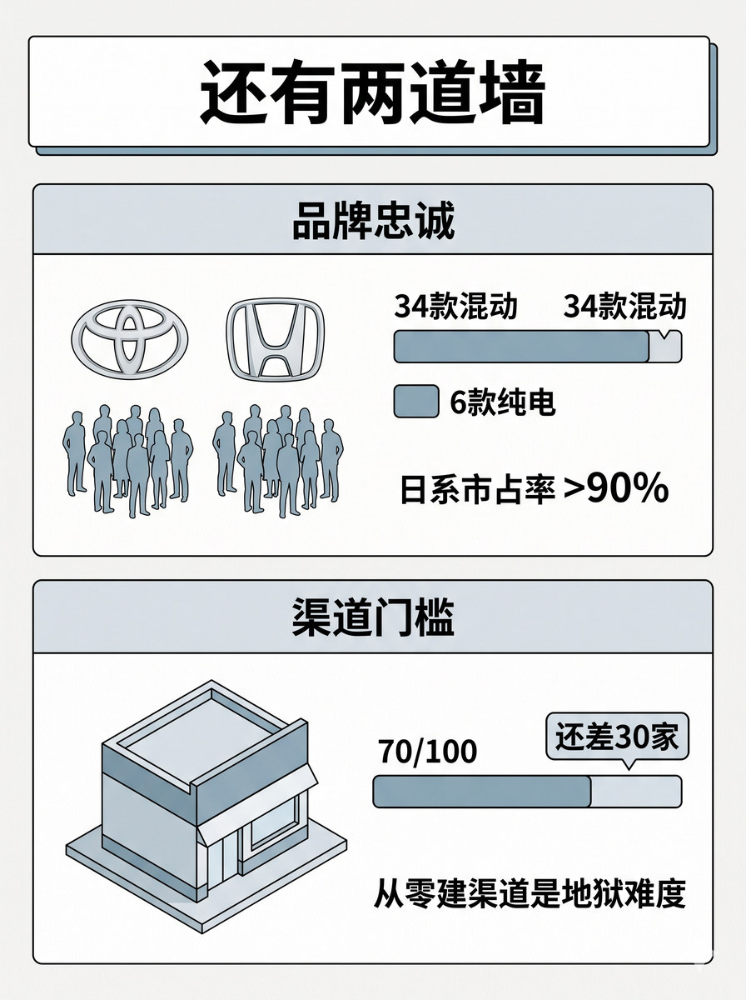
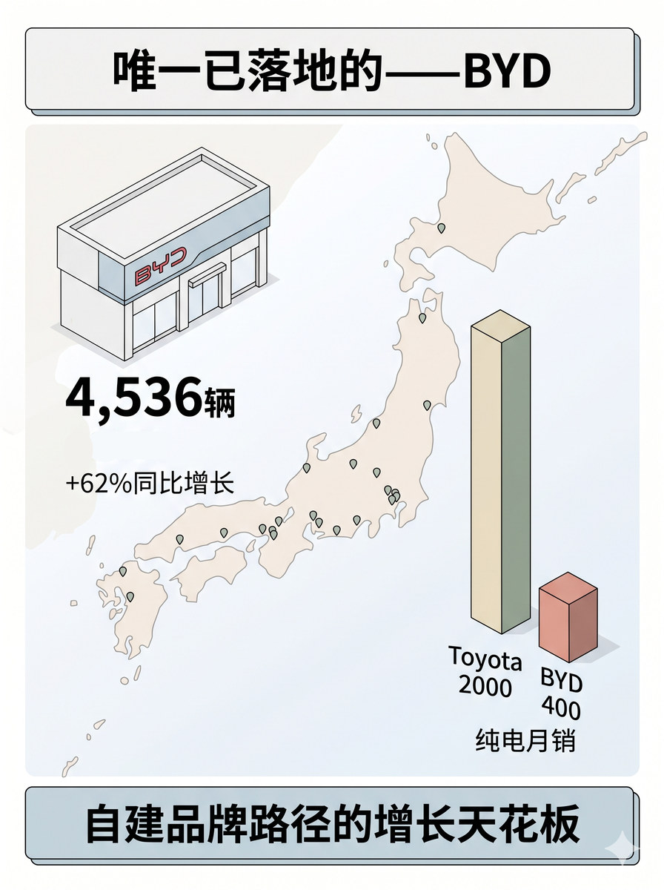
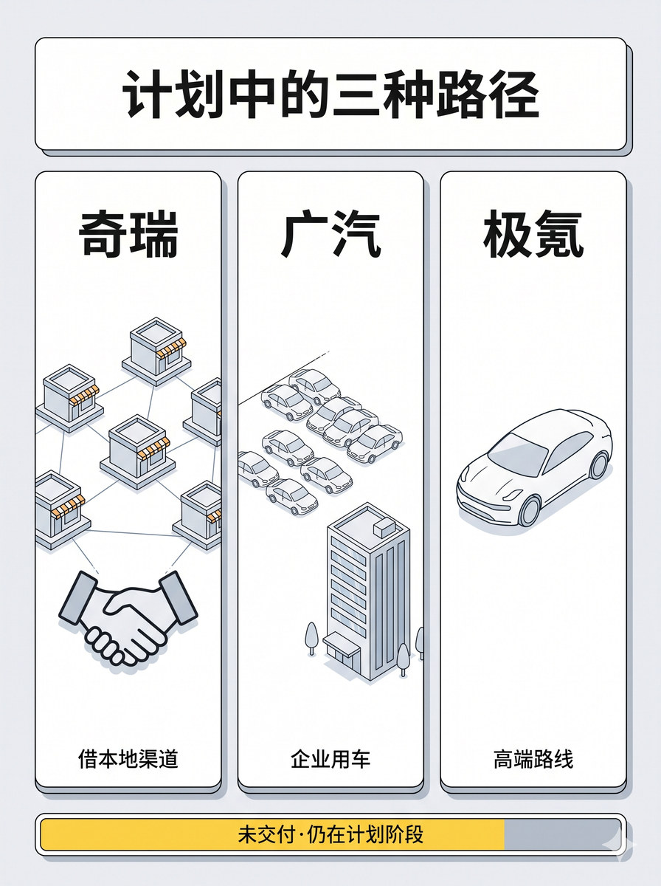

历史 Nano Banana 竖版短视频配图基线：覆盖渠道、品牌认知和服务体系等多层进入壁垒
生成一张 3:4 竖版静态配图。 整体采用顶部标题 + 上下两层层板并列结构，中间用分隔线区分。 顶部标题："还有两道墙" 上层主题"品牌忠诚"。画丰田和本田的品牌符号简笔，配消费者群体轮廓，旁边显示数字对比条："34款混动可选" vs "仅6款纯电可选"，下方标注"日系市占率>90%"。 下层主题"渠道门槛"。画单家门头建筑，旁边显示进度条"70/100"，差值"还差30家"，下方标注"从零建渠道是地狱难度"。 上层和下层的层板之间用一条细分隔线区分，表示两道墙是并列关系。 图中只允许出现这些文字："还有两道墙"、"品牌忠诚"、"34款混动"、"6款纯电"、">90%"、"渠道门槛"、"70家"、"还差30家"。 不要额外新增文字，不要水印，不要"AI生成"字样，不要品牌官方 logo，不要无意义英文装饰。 整体视觉采用 clean isometric business schematic，modular business illustration with light 3D structural feel，flat illustration，light texture，理性、克制、整齐。

生成一张 3:4 竖版静态配图。 整体采用顶部标题 + 左右双区 + 底部结论横条的结构。日本地图轮廓作为全图浅色半透明底纹。 顶部标题："唯一已落地的——BYD" 左侧为场景区：BYD门店门头简笔场景，旁边显示"4,536辆"和"+62%同比增长"，日本地图上有零星门店点位标记。右侧为数据对比区：柱状对比图，左侧高柱"Toyota 2000"（标记纯电月销），右侧矮柱"BYD 400"，柱体颜色区分。 底部结论横条：文字"自建品牌路径的增长天花板"。 图中只允许出现这些文字："唯一已落地的——BYD"、"4,536辆"、"+62%"、"Toyota 2000"、"BYD 400"、"自建品牌路径的增长天花板"。 地图范围：日本列岛轮廓，抽象简化，仅作为背景底纹。 不要额外新增文字，不要水印，不要"AI生成"字样，不要品牌官方 logo，不要无意义英文装饰。 整体视觉采用 clean isometric business schematic，modular business illustration with light 3D structural feel，flat illustration，light texture，理性、克制、整齐。

生成一张 3:4 竖版静态配图。 整体采用顶部标题 + 三张等大横向卡片并列 + 底部状态标识条的结构。 顶部标题："计划中的三种路径" 左卡片标题"奇瑞"，卡片内画门店网络图标+握手符号，下方小字"借本地渠道"。中卡片标题"广汽"，卡片内画车队简笔+办公建筑，下方小字"企业用车"。右卡片标题"极氪"，卡片内画豪华车型轮廓，下方小字"高端路线"。 三张卡片之间为并列关系，无明显连接。 底部状态条：黄色/灰色标签条，文字"未交付·仍在计划阶段"。 图中只允许出现这些文字："计划中的三种路径"、"奇瑞"、"借本地渠道"、"广汽"、"企业用车"、"极氪"、"高端路线"、"未交付·仍在计划阶段"。 不要额外新增文字，不要水印，不要"AI生成"字样，不要品牌官方 logo，不要无意义英文装饰。 整体视觉采用 clean isometric business schematic，modular business illustration with light 3D structural feel，flat illustration，light texture，理性、克制、整齐。
